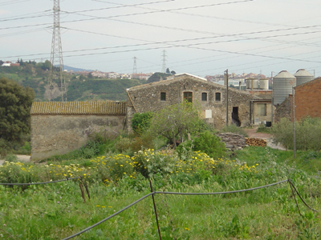
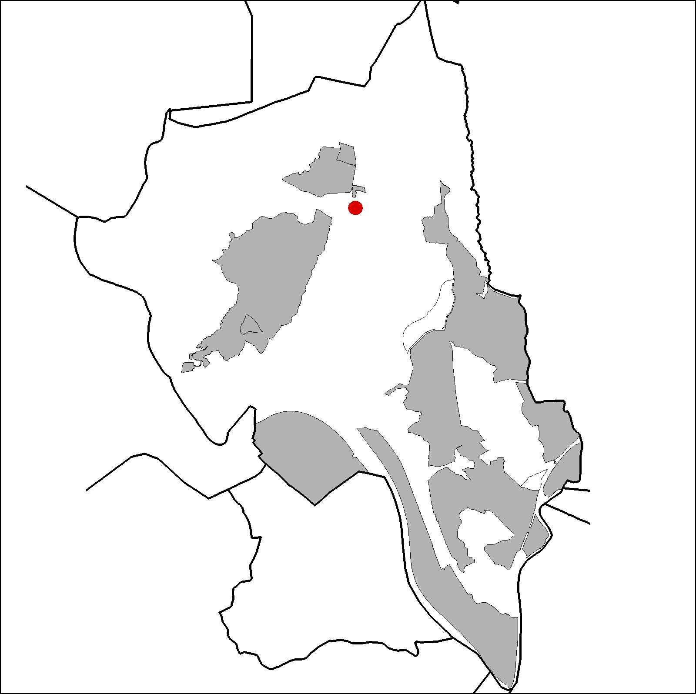

|  |  |
Nom de l’element: Ca n’Oliveró
Clau d’identificació: B.1.14
Nucli o indret: Vora la carretera de Terrassa a Martorell.
UTM: X= 413.943, Y= 4.594.641.
Referència cadastral: Poligon 1, parcel·la 9506 (000509100DF19C0001RP)
Règim del sòl: Sòl no urbanitzable.
1.1. Època de construcció i tipologia:
Masia del segle XVII, reformada al 1955, amb murs de pedra i la coberta, a dues aigües, de fusta i teula. El cos principal de la masia, de planta baixa i planta pis, ha patit moltes transformacions. S’han creat riques façanes amb motllurats i una galeria d’arcs de dues plantes amb orientació oest. La masia no segueix la directriu de l’orientació del carener en direcció sud nord. Hi ha una inscripció a la porta d’accés amb data del 1900. S’han construït cossos annexes, dos magatzems i un galliner. S’han remontat parets originàries de pedra amb obra de maó.
1.2. Estat de conservació:
En general, mitjà. Les estructures portants, els forjats, les voltes, la coberta, el paviment i les obertures es troben en estat de conservació mitjà: les façanes i els acabats interiors es troben en estat dolent. Presenta humitats.
1.3. Ús actual:
Habitatge i agrícola.
1.4. Accés:
Accés fàcil des del Camí de Ca n’Oliveró des de les Casetes de Ca n’Oliveró.
Masia del segle XVII, amb una notable galeria d’arcs de dues plantes.
3.1. Usos admesos:
Habitatge rural (màxim 3 habitatges); residencial; hoteler (excepte aparthotel; i amb un màxim de 30 places); oficines i serveis; industria vinculada a productes del camp (industrial, categoria 1ª); educatiu; recreatiu cultural i social; recreatiu de restauració; esportiu.
3.2. Condicions d’ordenació:
Pla Especial de protecció del patrimoni (aprovació 2003. Expedient 01/487)
3.3. Accés i serveis:
Des del Camí de Ca n’Oliveró des de les Casetes de Ca n’Oliveró.
BCIL (Bé Cultural d’Interes Local)